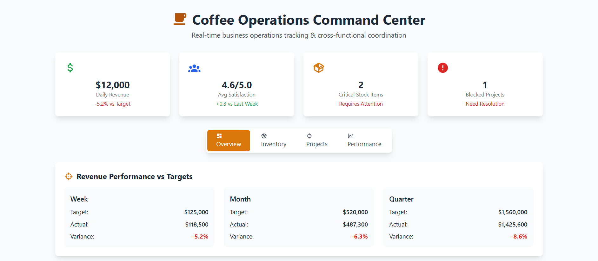

Coffee Operations Command Center
Business operations dashboard for multi-location coffee chain management. Features inventory tracking, project coordination, performance analytics, and cross-functional task management.
- Revenue Tracking: Real-time performance vs targets with variance analysis and gap identification.
- Inventory Management: Multi-location stock monitoring with automated reorder alerts and critical item tracking.
- Project Coordination: New product rollout tracking with progress monitoring and blocker escalation.
- Cross-Functional Tasks: Department coordination dashboard for sales, operations, IT, and marketing alignment.
Business Impact: Demonstrates business operations expertise through comprehensive tracking systems and cross-departmental coordination.
Business Operations
Project Coordination
Performance Analytics
Cross-Functional
View Live Demo